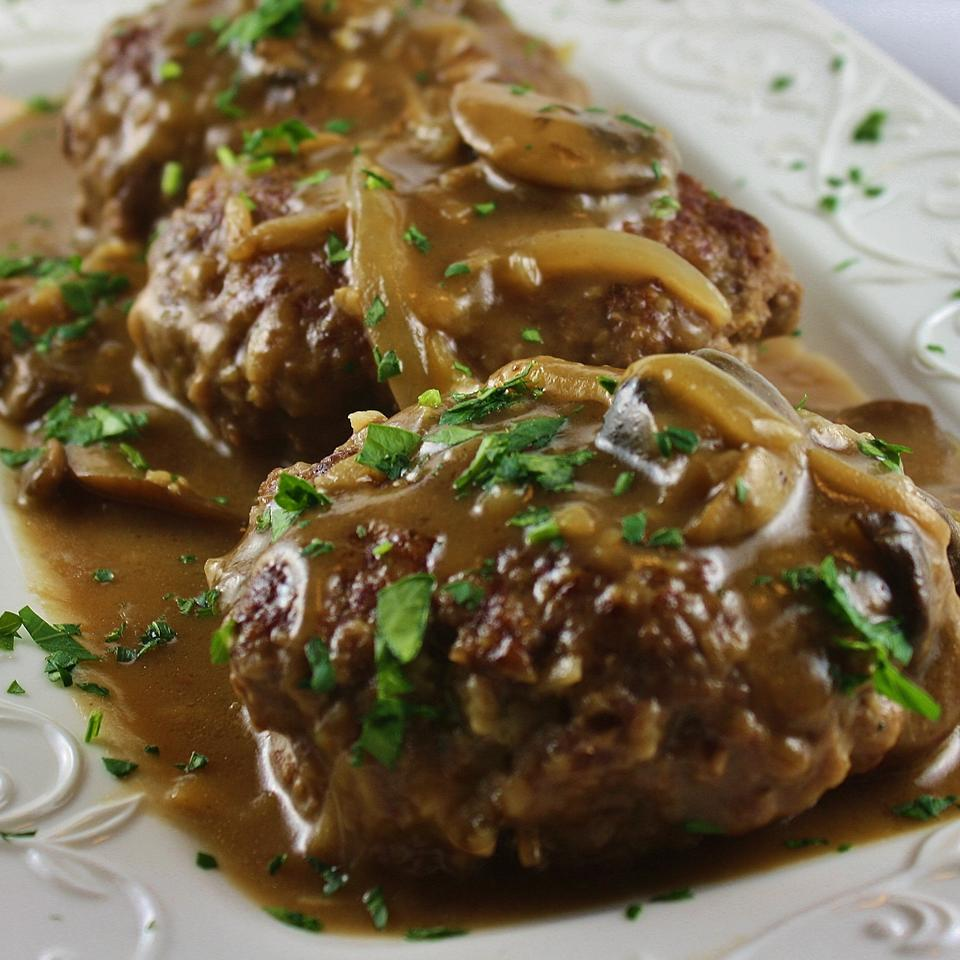

Midwest Salisbury Steak

Description
Use good ground sirloin, and it'll tastes wonderful and you won't have any grease to drain from the patties once they've browned. Serve over mashed potatoes, egg noodles, or rice. Simply delightful!
Ingrediants
- 1 pound ground sirlion
- 1/2 cup panko bread crumbs
- 1 egg,beaten
- 2 tablespoons milk
- 1/2 package dry onion soup mix
- 1 teaspoon Worcestershire sauce
- 1/4 teaspoon ground black pepper
Directions
- Mix ground sirloin, panko bread crumbs, egg, milk, and 1/2 packet onion soup mix, Worcestershire sauce, and black pepper together in a large bowl; shape into 5 patties.
- Heat a skillet over medium heat. Cook patties in hot skillet until browned, 3 to 5 minutes per side.
- Melt butter in a separate skillet over medium-high heat. Saute mushrooms and onion in melted butter until tender, 5 to 7 minutes. Stir flour and remaining dry onion soup mix into the mushroom mixture; cook and stir until flour is integrated fully, about 1 minute. Stream beef stock and water over the mushroom mixture while stirring continually; bring to a simmer, reduce heat to medium, and cook, stirring frequently, until the liquid thickens, about 5 minutes. Season with salt and pepper.
- Lie the browned steaks into the gravy; simmer until steaks are firm and gray in the center, about 30 minutes. An instant-read thermometer inserted into the center should read 160 degrees F (70 degrees C).
Back to main page